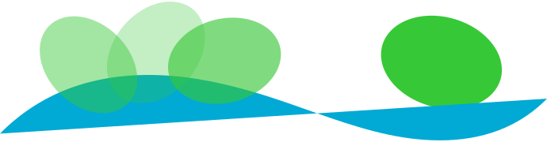
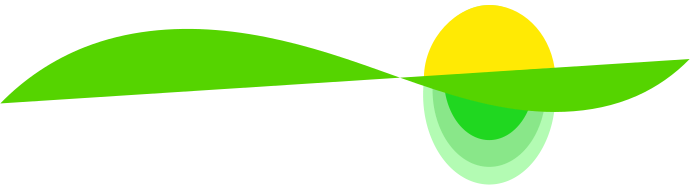
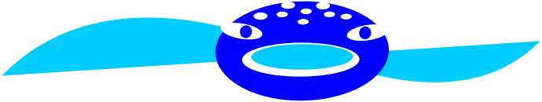
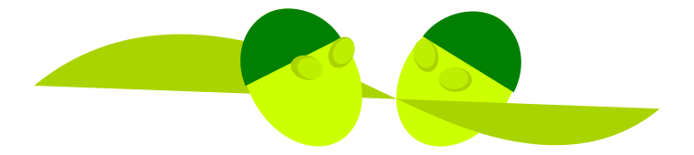

Das Angebot
ist vielfältig und individuell gestaltbar.
Wir lernen uns kennen und erkunden deine Wünsche und Vorstellungen. Auf basis deine vorhandene schwimmkenntnisse entwickeln einen gemeinsames Ziel.
Bezeichnungen Grüne welle, Haiflosse und Walhai helfen dir bei der Orientierung und Zielsätzung. Meine Empfehlung ist eine geführte Einheit ergänzt mit eine selbständige Einheit pro Woche zu planen.
DEINE MISSION
Wasser als element zu genießen, einfach schwimmen und spaß dabei haben!
Vielleicht findest du dich hier wieder !?!
- Ich habe ganz klare vorstellung was ich will!
- Ich will etwas für mich tu!
- Kraulen wollte ich schon immer lernen!
- Ich brauche Struktur und ein Trainings-Plan!
. . . sonst schreibe mit was dich motiviert!
Viel Spaß bei der Wahl!
Kennenlernen
Was kann ich? Was möchte ich können? Geht das?
Das "Kennenlernen" gibt uns die Gelegenheit, deine Erwartungen, Wünsche und Möglichkeiten zu besprechen. Deine Schwimmfähigkeiten genau zu untersuchen und deine Vorstellungen zu erkunden.
Wir lernen uns kennen und entwickeln ein Ziel.
mehr/weniger
Solltest du dich für einen Lernblock mit mir entscheiden, kann das "Kennenlernen" die Einstiegsmöglichkeiten klären.
Eine weitere Möglichkeit besteht darin, selbstständig ein Programm zu absolvieren, das zum Erlernen oder Perfektionieren von Grundfähigkeiten entworfen wurde.
Du gewinnst Einblick in Schwerpunkte, auf die du besonderes Gewicht legen kannst, und Ideen für deinen möglichen Entwicklungsweg.
Grüne Welle
Ich kann baden !
Am Anfang ist jeder Anfänger.
Das Wasser kennen lernen, den eigenen Körper im Wasser wahrnehmen, schweben, gleiten, sinken, aktiv atmen, Körperspannung halten - das sind die Fähigkeiten, die zuerst spielerisch geübt werden.
Wechselbeinschlag und Teile der Armzug Bewegungen werden langsam integriert.
Nach Absprache wird Kraul-, Rücken- oder Brust Lage als einstiegs Lage angestrebt.
mehr/weniger
- Du kannst gleiten und bist dir deiner Wasserlage bewusst;
- Du kannst kontinuierlich einatmen und im Wasser ausatmen, während du Wechselbeinschlag schwimmst
- Du kannst einarmig Kraul oder Rücken Lage schwimmen und grob Gesamtbewegungen.
Brust lage ist anders, dafür sind der aufbau und das ziel anders definiert.
Gleiten und ausatmung, richtige armbewegung, richtige beinbewegung werden als teilbewegungen eingeübt.
Das ziel ist alle Teilbewegungen grob miteinander zu verbinden.
Du hast die Grundlage deiner Lieblings-Schwimmlage erworben und kannst die weiterentwickeln.
Haiflosse

Ich möchte Brust-/Rücken-/Kraul Schwimmen weiterentwickeln
Zuerst werden Grundfähigkeiten wiederholt: Atmung, Gleiten, Wechselbeinschlag, Armbewegungen und/oder teilbewegungen des Brustschwimmens.
Danach werden je nach Schwimmlage einzelne Elemente des Armzugs geübt, bei gleichzeitiger Aufmerksamkeit auf Wasserlage, Atmung und Beinschlag.
mehr/weniger
Die Übungen und deren Aufbau werden individuell gestaltet und an dein Können und deinen persönlichen Korrekturbedarf angepasst. Es ist ganz wichtig, dass du dir Zeit nimmst und zwischen den begleiteten Einheiten selbständig übst. Das Ziel ist bessere Vorstellung für richtige Bewegungsabläufe zu gewinnen, besseres Körpergefühl für die Wasserlage, sowie Freude am Üben zu entwickeln.
Du kannst selbständig einige technische Übungen ausführen und einfache trainingspläne selbständig trainieren. Wie schnell/gut sich deine geübte technik entwickelt, ist individuell und offen, und von vielen faktoren abhängig. Es ist ganz wichtig eigenes Lerntempo zu finden und kontinuität zu bewahren da das Lernen zeit braucht.Um deine Trainingsfortschritte zu überprüfen, können wir uns in einer "Wiedersehen" stunde sehen.
Walhai
Ich möchte einfach schwimmen!
Dein ziel ist einfach zu schwimmen. Um kontinuität zu behalten hilft es dir dabei unterstützung zu haben.
Ein trainingsplan und immer wieder eine kleine aufgabe halten deine aufmerksamkeit und motivation lebendig. Rückmeldungen und tipps helfen dir deine selbstwahrnehmung zu schulen.
mehr/weniger
Im Modul Walhai ist häufigkeit nach bedarf zu richten, die Idee ist eine langfristige trainerische Begleitung in Anspruch zu nehmen. Am besten nach einer intensiven Lernphase.
Wiedersehen
Mache ich noch immer alles richtig? Ich hätte noch eine Frage?
Wir schauen uns gemeinsam an, ob alles Gelernte richtig geübt wird. Wir stellen fest, wo noch eine Verbesserung möglich ist, und vielleicht setzen wir uns neue Ziele.